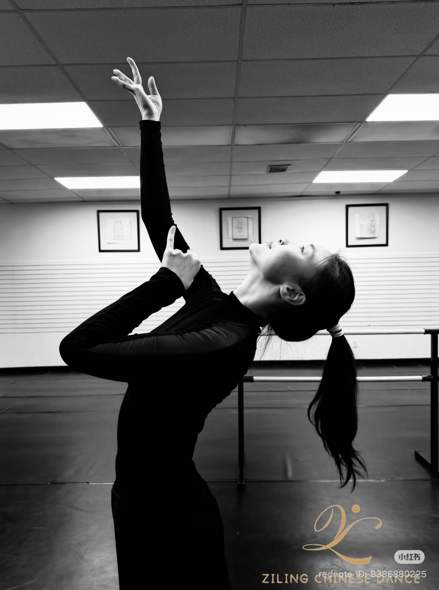

About the School
Ziling Chinese Dance was established in 2026, dedicated to sharing the grace and depth of Chinese classical dance with adults throughout Massachusetts. Whether you are stepping onto the studio floor for the first time or returning to a lifelong passion, you will find a welcoming space here to explore this art form — its flowing silk sleeves, expressive postures, and five thousand years of living culture.
Instructor

Ziling Ma trained at the Central Conservatory of Music (2003–2008) and graduated from Capital Normal University with a B.A. in Dance (2012), majoring in Chinese classical and folk dance, with additional study in contemporary and ballet.
A multiple scholarship recipient and Outstanding Graduate, she has performed at the 60th National Day Grand Parade in Beijing, the Italian Cultural Festival, the Kremlin's Chinese New Year Opening Ceremony, and on CCTV. She has taught classical dance foundations and movement arts at the Central Conservatory of Music and Shougang University of Technology.
She now brings that depth of training and stage experience to adult learners across Massachusetts.
Gallery
Videos
Class Schedule
* Schedule subject to change. Contact us to confirm.
Contact
Studio Locations
162 Milk Street
Westborough, MA 01581
By appt & class schedule
1 HF Brown Way
Natick, MA 01760
By appt & class schedule
536 Massachusetts Ave
Cambridge, MA 02139
By appt & class schedule